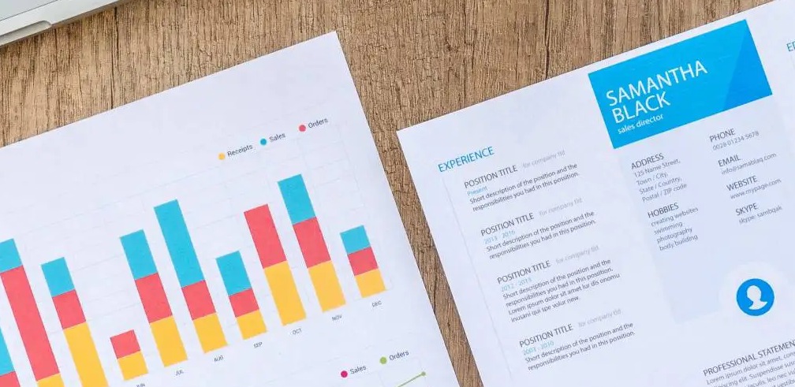
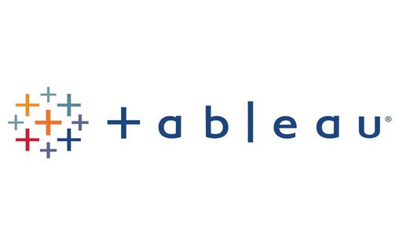
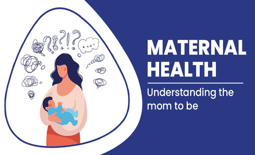
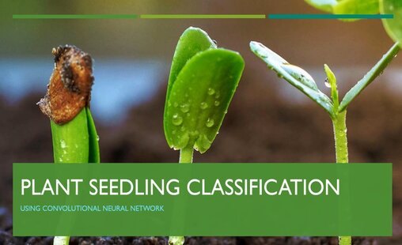
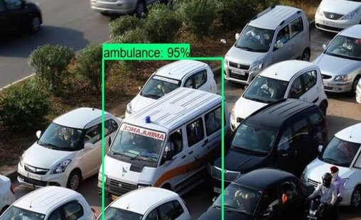
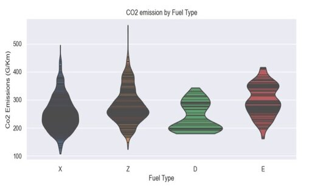
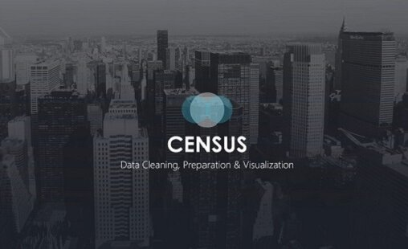

November 25, 2023
I built an application that integrates an LLM and can accept a Resume or CV,
and based on the skills listed on the resume, it suggested appropriate jobs
that are best fit for the users. Also, it can suggest additional skills needed for
that job if not listed on the resume.


Tableau Dashboards for projects on AirBnB Listings in US

The aim of analyzing this project is to understand the association between different health parameters and the risk of health complications, particularly in relation to systolic blood pressure.

It is an image classification problem that aims to classify different species of plants based on images of their seedlings. It involves the development of algorithms that can accurately identify the species of plants based on images of their seedlings

This project aims to address this gap by examining the capabilities and performance of various emergency vehicle detection systems and identifying opportunities to enhance their effectiveness.

The goal of this project is to predict CO2 emissions in vehicles using regression model. This is done by identifying features that contribute to higher emissions and also comparing fuel types

Compare different people across the nation and to provide the government with accurate statistics of the population to enable better planning, to develop policies, and to allocate certain funding.